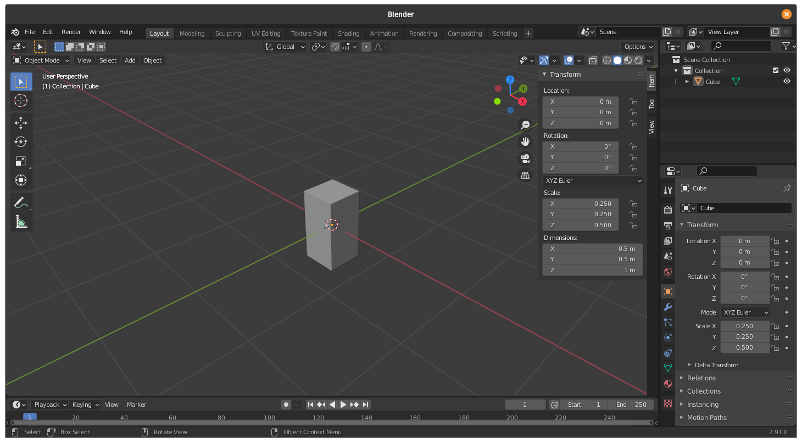
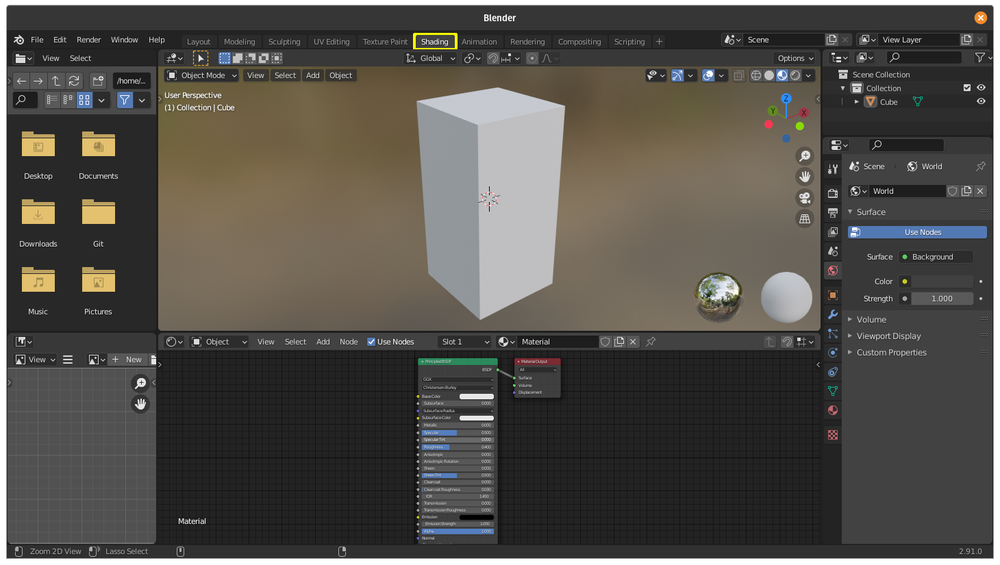
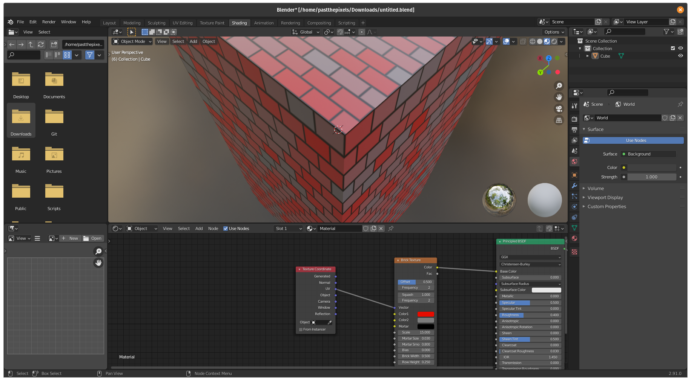

Making Your Character¶
Next, we get to decide what our player’ll look like. Of course, they’ll never see what they look like, but it’s always fun to give your game a voice. You know, like the player model in Half-Life 2.
Basic Character¶
For beginners, we’re going to make a tall cube. It’s just like the base, except we’re going to scale it to (.5, .5, 1), which is probably a realistic height. (Note that we use SI units; one unit in measurement here counts as one meter. In Blender, you can also input inches or any other form of measurement like “5 cm” and it will automatically preform conversions for you.) It should look like this:
Now, move over to the shading tab.
Over here, you can mess with the object’s material, but you can also press Shift+A to add a “node”, search for something like a brick texture, and drag its color “dot” into the “dot” in the node titled “Principled BSDF”.
You may want to work with something called UV mapping. Click on the object, hit Control+A, and then hit “All transforms”. This applies scaling to the geometry of the object itself. To unwrap the object for textures to look smooth, hit Tab, the U key, click “Smart UV Project”, and then hit the Enter key. What this just did is unwrap the faces of your object so that the textures don’t look… like the way they do right now. You’re going to have to set up your nodes like this, however, to get your model looking better:
Note that the brick texture is just used as an example for a texture. You can go to the “UV Editing” to see what your mesh unwrapping looks like.
Now all you need to do is export this the same way you did for the base, name it “player.glb”, and you’re done!